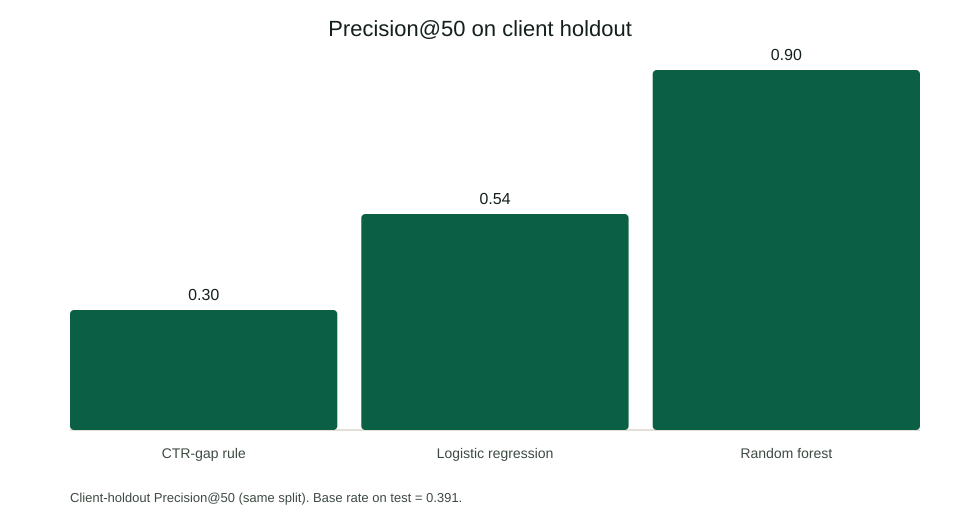

Ranking pages for refresh review
Full paper: abstract through acknowledgments. Client-holdout Precision@50 0.90 vs 0.30 CTR-gap baseline — with honest limits and a FlyRank data credit.

Open the paperOn real FlyRank search data — a ranked editor queue with reason codes and honest limits. For a hiring manager who needs a useful prototype, not a flashy demo.
Capstone research paper plus two shorter cases. Same problem: which page should an editor look at first?
Full paper: abstract through acknowledgments. Client-holdout Precision@50 0.90 vs 0.30 CTR-gap baseline — with honest limits and a FlyRank data credit.

Open the paperLearned ranker beat a transparent rule baseline on precision@50 (0.74 vs 0.24, starter run) — and I say what that does not prove.
 Read the case
Read the case
I locked the decision, unit of analysis, and a proxy target that does not leak the label — before any model training.
Read the caseI build ranking systems on messy search data and say what they can and cannot claim. Evidence on this site: the deployed research paper, a 30k-page refresh queue with a baseline comparison, reason codes, and claimed limits. The one action I want from you: email me to talk about an ML intern or junior role.